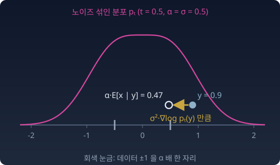

속도와 스코어의 다리: 트위디 공식으로 서로 옮겨진다
디퓨전은 스코어를 배우고, 플로우 매칭은 속도를 배운다. 둘은 전혀 다른 것을 배우는 걸까?
플로우 매칭의 조건부 타깃은 도착점에서 출발점을 뺀 것(x − z)이었다. 디퓨전에도 같은 자리에 놓이는 조건부 타깃이 있다. 데이터 점 x에 신호의 비율 αt를 곱하고 노이즈 z를 σt만큼 섞은 xt = αtx + σtz 꼴의 경로에서, 조건부 스코어 타깃은 αt를 빼먹으면 안 된다.
이것도 조건부 타깃이다. 위치와 시간에 따라 변하지만, 그 점에서 플로우 매칭의 x − z와 다를 바 없다. 둘 다 신경망이 실제로 배우는 것은 그 평균, 주변 필드다.
두 필드를 잇는 다리
플로우 매칭의 직선 경로는 αt = t, σt = 1 − t인 가우시안 경로다. 그러면 주변 속도장과 주변 스코어가 한 식으로 이어진다.
유도는 아래 문제 8에서 한다. 재료는 트위디 공식 하나다. 노이즈 섞인 관측 xt = αtx + σtz에서 αtE[x | xt] = xt + σt²∇log pt(xt), 곧 안개 낀 점(노이즈 섞인 점)에서 스코어 방향으로 σt²만큼 걸으면 원래 점의 (αt배 된) 사후 평균에 닿는다.

속도장을 배우면 스코어를 얻고, 스코어를 배우면 속도장을 얻는다. 가우시안 경로에서 플로우 매칭과 디퓨전은 같은 것을 다른 변수로 적은(매개화한) 것이다.
문헌도 같은 결론에 닿았다. 킹마(Diederik Kingma)와 가오루이치(Ruiqi Gao)는 2023년 논문에서 여러 디퓨전 손실을 한 틀, 곧 노이즈 수준별로 비중을 붙인 ELBO(evidence lower bound, 로그 우도의 아래 경계인 증거 하한)의 적분으로 묶었다. 가오루이치 외(2024)의 블로그 글 「Diffusion Meets Flow Matching: Two Sides of the Same Coin」은 같은 스케줄에서 DDIM(denoising diffusion implicit model, 잡음 제거 디퓨전 암묵적 모델) 샘플러와 플로우 매칭의 오일러 샘플러가 같은 것임을 보였다.
그렇다면 "플로우 매칭의 타깃이 더 단순해서 학습이 더 안정적"이라는 흔한 말은 어디까지 맞을까? 같은 정보라면 무엇을 맞히게 하든 상관없을까? 이 물음은 아래 문제 9에서 다룬다.
수확
“가우시안 경로에서 속도장과 스코어는 트위디 공식 하나로 서로 옮겨진다. 디퓨전과 플로우 매칭은 같은 정보를 다른 변수로 적은 것이다.”
문제 8. 속도장과 스코어를 잇는 다리 (킬러)
선형 경로 xt = (1 − t)z + tx, z ~ N(0, I)에서 (가) 주변 속도장이 v(y, t) = y/t + ((1 − t)/t)∇log pt(y)임을 증명하라. (나) 이 식은 t → 0에서 어떻게 되는가? 정의 v(y, 0) = E[x − z | z = y]와 모순이 없는지 확인하라.
함께 풀기

v = E[x − z | xt = y]에서 시작할게요. xt = y이면 z = (y − tx)/(1 − t)라서 x − z = (x − y)/(1 − t)예요. 그러니까 v = (E[x | y] − y)/(1 − t)예요.

좋아요. 이제 E[x | y]를 스코어로 쓰면 끝나요.

거기서 막혀요. pt(y) = ∫ p(x) N(y; tx, (1 − t)²) dx를 y로 미분해 봤는데, E[x | y]가 따로 떨어져 나오지를 않아요. 적분 안에 x가 남아요.
디퓨전에서 "안개 낀 점(노이즈 섞인 점)에서 스코어 방향으로 걸으면 어디에 닿는다"고 했죠?

트위디 공식이요! 안개 낀 관측 y = αx + σz에서 αE[x | y] = y + σ²∇log pt(y)예요. 여기서는 α = t, σ = 1 − t예요.
그러면 E[x | y] = (y + (1 − t)²∇log pt)/t예요. 넣으면 v = [(y + (1 − t)²s)/t − y]/(1 − t) = [y(1 − t)/t + (1 − t)²s/t]/(1 − t) = y/t + ((1 − t)/t)s예요. 됐어요.
제가 막힌 곳이 트위디 증명의 한가운데였어요. 가우시안 커널을 미분하면 (tx − y)/(1 − t)²가 나오고, 거기서 x가 남는 걸 "사후 평균"으로 읽으면 끝나는 거였어요.

(나)는 제가 할게요. t = 0을 넣으면 y/0이라 무한대로 가요. 코드로 확인했어요. 두 점 ±1 데이터에서 t = 0을 넣으니 nan이 나와요. 그러니까 플로우 매칭 속도장은 출발 순간에 무한대고, 그래서 실제 코드에서 t를 0.001부터 시작하는 거예요.
정의대로 t = 0에서 계산하면요? x0 = z예요.
z = y면 x는 z와 독립이니까 E[x − z | z = y] = E[x] − y… 두 점 ±1이면 −y예요. y = 0.3이면 −0.3이요. 유한해요.

그런데 식은 무한대로 가는데요?
t가 작을 때 pt는 무엇에 가까워요? 그 스코어를 넣어 봐요.
p₀ = N(0, 1)이니까 스코어 ≈ −y예요. 그러면 y/t + ((1 − t)/t)(−y) = y/t − y/t + y… 1/t끼리 지워져요. 그런데 남는 게 +y예요. 정의로는 −y인데 부호가 반대예요.
스코어를 −y로만 쓰면 안 돼. 앞에 1/t가 곱해지니까 스코어의 t 1차 항이 살아남아. pt의 평균이 t·E[x], 분산이 (1 − t)² + t²Var[x] ≈ 1 − 2t라서 s ≈ −y + t(E[x] − 2y) + O(t²)이야. (1 − t)/t를 곱하면 −y/t + E[x] − y + O(t)이고, y/t를 더하면 v(y, 0) = E[x] − y. 정의와 정확히 같아.
숫자로도 찍어 볼게요. y = 0.3에서 t = 10⁻³이면 −0.2999994, 10⁻⁸이면 −0.2999999970, 10⁻¹²이면 −0.29993, 10⁻¹⁵이면 −0.3125예요. 직접식 (tanh(ty/(1 − t)²) − y)/(1 − t)는 전부 −0.3이고요.

극한은 −0.3이 맞아요. t를 너무 줄였을 때 틀어진 건 10¹⁴이 넘는 두 수를 빼면서 자릿수를 다 잃어서예요. 특이점은 식의 표기에만 있고 속도장에는 없어요.
기말 보고서에 "조교 점수 = 총점 ÷ 과제 수 × 과제 수"라고 쓴 식을 과제 수 0에서 계산하면 0/0이 되는 거랑 같네요. 식이 멍청한 거지 점수가 없는 게 아니에요.
해석학 수업에서 제거 가능한 특이점을 배울 때 sin x / x를 봤는데, 딱 그 모양이네요. 식으로는 0/0처럼 보여도 함수는 거기서 멀쩡해요.
그럼 다른 끝 t → 1은요? 샘플러 코드들은 t를 1 바로 앞에서 멈추던데요.
데이터를 폭이 있는 N(4, 0.5²)로 두고 v(4.5, t)를 찍어 봤어요. t = 0.99999면 4.50002인데 t = 1을 그대로 넣으면 nan이에요. E[x | y]가 y로 가고 분모 1 − t도 0으로 가서 0/0이에요. 극한은 4.5로 멀쩡해요.

그런데 데이터가 폭 없는 두 점 ±1이면 달라. y = 0.5에서 t = 0.9, 0.99, 0.999면 v가 5, 50, 500이야. 1 − t로 나눈 만큼 그대로 커져. 이건 표기가 아니라 진짜야. 마지막 순간에 모든 새가 점 두 개로 빨려 들어가야 하니까.

이 문제가 이 장을 요약해요. 플로우 매칭이 배우는 속도장과 디퓨전이 배우는 스코어는 트위디 공식 하나로 이어진 같은 정보예요. 그리고 식이 보여 주는 특이점을 곧이곧대로 믿기 전에, 정의로 돌아가서 극한을 확인하는 습관. 실제 구현이 t = 0 근처를 조심하는 건 속도장이 무한대여서가 아니라, 이런 식을 그대로 쓰면 자릿수를 잃기 때문이에요. t = 1 쪽은 데이터에 폭이 있는지에 따라 가짜일 수도 진짜일 수도 있으니, 코드는 두 끝 모두 바로 앞에서 멈춰요.
문제 9. 노이즈를 맞힐까, 속도를 맞힐까
선형 경로 xt = (1 − t)z + tx에서 신경망에게 맞히게 할 것을 셋 가운데 고를 수 있다: 노이즈 z, 데이터 x, 속도 v = x − z. 하나를 맞히면 나머지 둘은 xt와 t로 계산된다. (가) t = 0.25, xt = 0.5에서 노이즈를 맞히는 신경망이 0.8을 냈다. 이로부터 계산한 데이터 어림과 속도 어림은 얼마인가? (나) 그 신경망의 답이 0.1 틀렸다면 데이터 어림과 속도 어림은 얼마나 틀리는가? t = 0.25와 t = 0.01에서 구하라. 속도를 맞히는 신경망이 0.1 틀렸다면 데이터 어림과 노이즈 어림은 얼마나 틀리는가?
함께 풀기
(가)는 0.5 = 0.75 × 0.8 + 0.25 × (데이터 어림)에서 데이터 어림이 (0.5 − 0.6)/0.25 = −0.4이고, 속도는 −0.4 − 0.8 = −1.2예요. 셋이 같은 정보라고 했으니까 (나)도 뻔해요. 0.1 틀리면 다 0.1쯤 틀리겠죠.
데이터 어림을 구하는 식에 노이즈 답이 어떤 계수로 들어 있어요?

−(1 − t)/t예요. t = 0.25면 3배라 0.3, t = 0.01이면 99배라 9.9나 틀려요. 속도는 (xt − 노이즈 답)/t이라 0.4, 10이 틀리고요. 같은 정보인데 오차는 전혀 안 같네요.
데이터를 맞히게 하면 거꾸로야. 노이즈 어림이 (xt − t × 데이터 답)/(1 − t)라서 t가 1에 가까울 때 커져. t = 0.99면 0.1 틀린 데이터 답이 노이즈 어림을 9.9 틀리게 해.
속도를 맞히는 쪽은요?
데이터 어림은 xt + (1 − t) × 속도 답, 노이즈 어림은 xt − t × 속도 답이에요. 0.1 틀리면 0.1(1 − t)와 0.1t만큼만 틀려요. 어느 끝에서도 0.1을 넘지 않아요.
그럼 "플로우 매칭의 타깃이 더 단순해서 학습이 더 안정적"이라는 말은 어떻게 고쳐 말하면 될까요?
타깃이 단순해서가 아니라, 같은 정보를 어떤 변수로 맞히게 하느냐에 따라 오차가 커지는 시간대가 달라지는 거예요. 노이즈를 맞히면 노이즈 쪽 끝(t → 0)에서, 데이터를 맞히면 데이터 쪽 끝(t → 1)에서 어림이 크게 틀어지고, 속도를 맞히면 양 끝에서 고르게 작아요.
그래요. 거기에 어떤 경로(노이즈 스케줄)를 쓰는지, 시간마다 손실에 어떤 비중을 주는지를 더하면 실제로 차이를 만드는 세 가지 선택이 돼요. 직선 경로와 속도 맞히기는 그 가운데 실전에서 잘 작동한 조합이에요.
수치해석 수업에서 배운 조건수 이야기네요. 작은 수로 나누는 식을 거치면 들어간 오차가 그만큼 커져요.